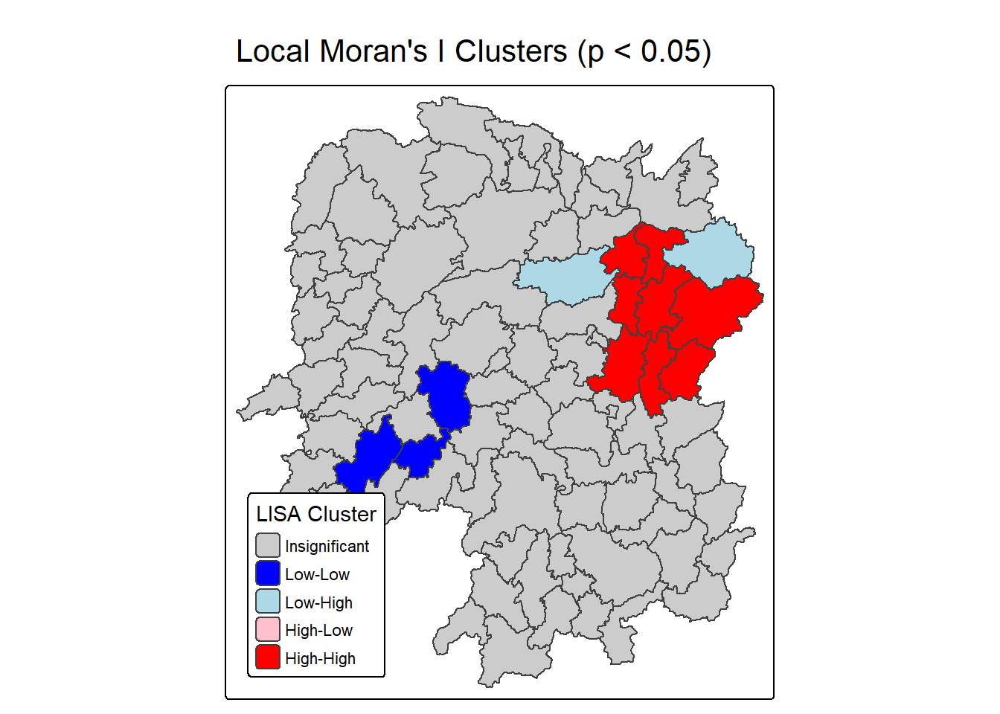
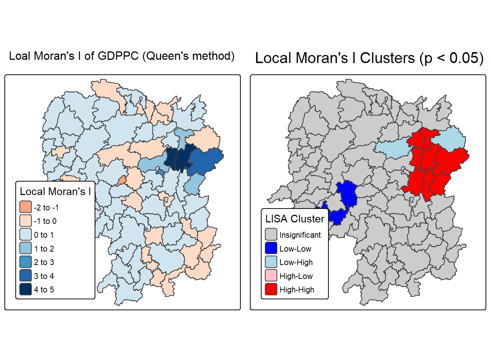
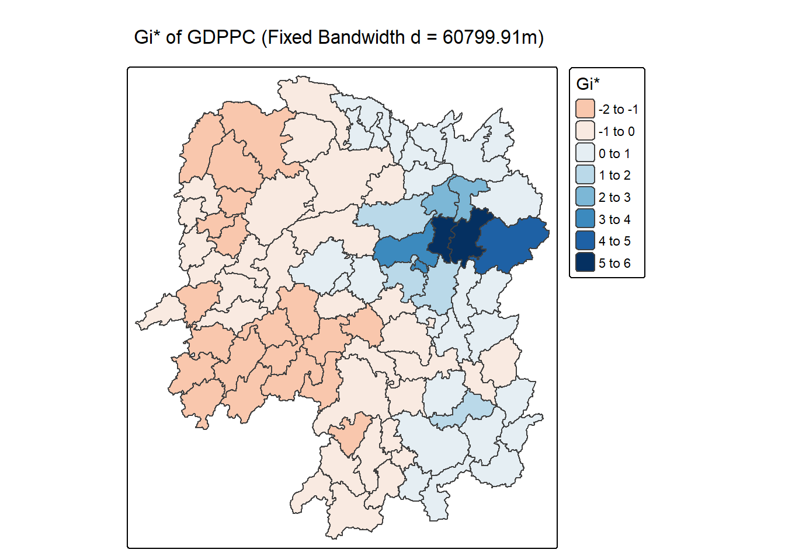
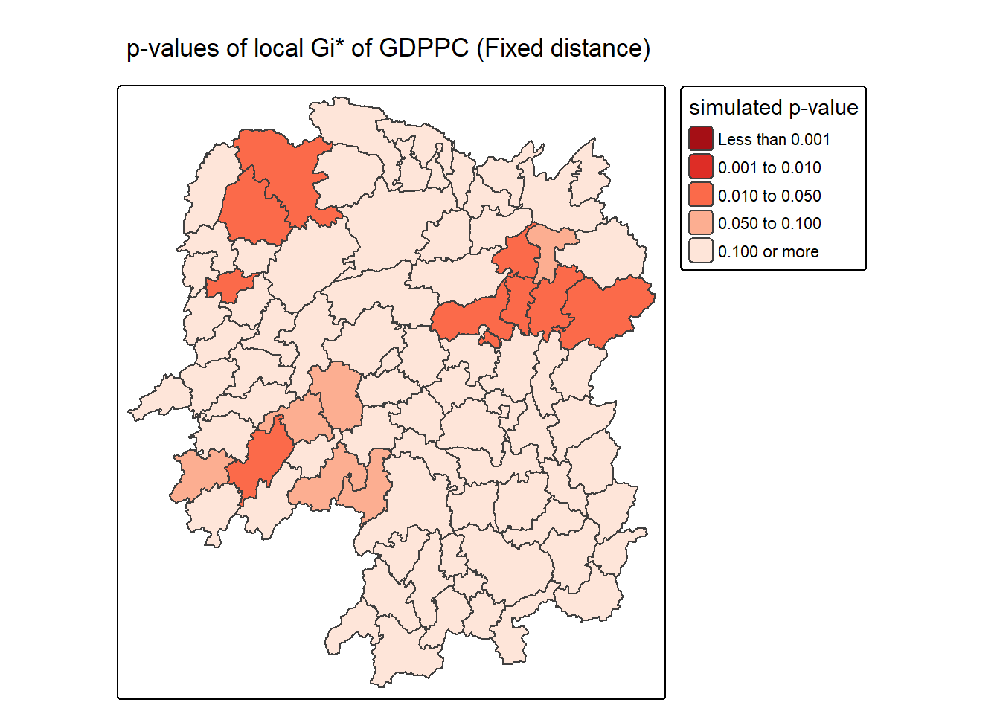
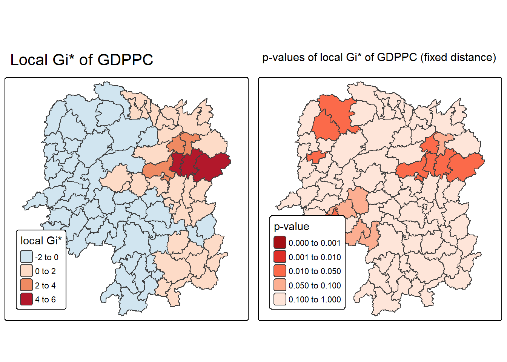
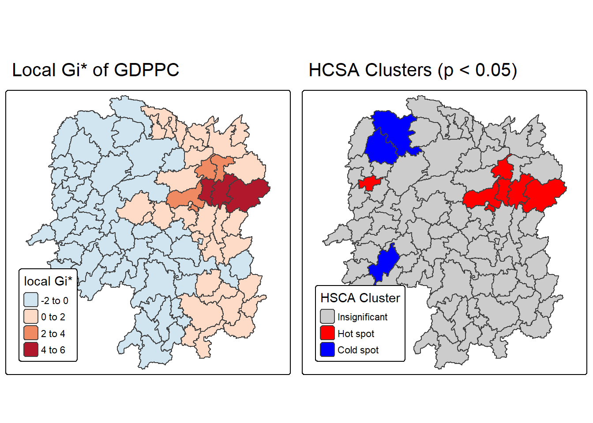

pacman::p_load(sf, sfdep, tmap, tidyverse)Hands-on Exercise 5b: Local Measures of Spatial Autocorrelation
1 Overview
In this hands-on exercise, you will learn how to compute Local Measures of Spatial Autocorrelation (LMSA) by using sfdep package. By the end to this hands-on exercise, you will be able to:
import geospatial data using appropriate function(s) of sf package,
import csv file using appropriate function of readr package,
perform relational join using appropriate join function of dplyr package,
compute Local Indicator of Spatial Association (LISA) statistics for detecting clusters and outliers by using appropriate functions sfdep package;
compute Getis-Ord’s Gi-statistics for detecting hot spot or/and cold spot area by using appropriate functions of sfdep package; and
to visualise the analysis output by using tmap package.
2 Getting the Data Into R Environment
hunan <- st_read(dsn = "data/geospatial",
layer = "Hunan") %>%
st_transform(crs = 32650)Reading layer `Hunan' from data source
`C:\sonphamsmu\isss626-aug2526\Hands-on_Ex\Hands-on_ex05\data\geospatial'
using driver `ESRI Shapefile'
Simple feature collection with 88 features and 7 fields
Geometry type: POLYGON
Dimension: XY
Bounding box: xmin: 108.7831 ymin: 24.6342 xmax: 114.2544 ymax: 30.12812
Geodetic CRS: WGS 84hunan2012 <- read_csv("data/aspatial/Hunan_2012.csv")Performing relational join
The code chunk below will be used to update the attribute table of hunan’s SpatialPolygonsDataFrame with the attribute fields of hunan2012 dataframe. This is performed by using left_join() of dplyr package.
hunan <- left_join(hunan,hunan2012) %>%
select(1:4, 7, 15)Visualising Regional Development Indicator
In the code chunks below, tmap functions are used:
to build two choropleth maps by using equal interval (i.e equal) and quantile (i.e. quantile) classification methods, and
to plot both maps next to each other by using
tmap_arrange().
equal <- tm_shape(hunan) +
tm_polygons(fill = "GDPPC",
fill.scale = tm_scale_intervals(
style = "equal",
n = 5,
values = "brewer.blues"),
fill.legend = tm_legend(
title = "GDPPC",
position = tm_pos_in(
"left", "bottom"))) +
tm_borders(fill_alpha = 0.5) +
tm_title("Equal interval classification")
quantile <- tm_shape(hunan) +
tm_polygons(fill = "GDPPC",
fill.scale = tm_scale_intervals(
style = "quantile",
n = 5,
values = "brewer.blues"),
fill.legend = tm_legend(
title = "GDPPC",
position = tm_pos_in(
"left", "bottom"))) +
tm_borders(fill_alpha = 0.5) +
tm_title("Quantile interval classification")
tmap_arrange(equal,
quantile,
asp=1,
ncol=2)
Outliers and Clusters
- Equal Interval Classification (left map)
- A few regions stand out in dark blue (highest GDPPC class), while most are in the lightest shades. This suggests the presence of **outliers** (a small number of regions with much higher GDPPC compared to the majority).
- Clusters are not very obvious here because the classification flattens most values into the lowest range, emphasizing the outliers instead.Quantile Interval Classification (right map)
The distribution of colors looks more balanced across the map since each class has the same number of regions. This makes clusters more visible: we can see neighboring regions with similar shades forming spatial groupings.
Outliers are less pronounced, since high values are spread across more color breaks.
Hot Spots and Cold Spots
Hot Spots (high GDPPC regions)
In both maps, darker blue areas represent potential hot spots. Equal interval highlights a few clear hot spots (e.g., central-east and southern areas).
Quantile classification reveals more dispersed hot spots, where several regions share mid-to-high GDPPC values.
Cold Spots (low GDPPC regions)
In equal interval, nearly the entire map is light-colored, making it harder to pinpoint cold spots beyond “everywhere except a few rich regions.”
In quantile classification, lighter shades cluster more in the western and northern areas, making cold spots more identifiable.
Summary
The equal interval map emphasizes outliers (a few high-GDPPC regions).
The quantile map emphasizes clusters and reveals hot/cold spots more clearly.
Hot spots appear in the east/central/south, while cold spots are more frequent in the west/north.
3 Local Indicators of Spatial Association(LISA)
Local Indicators of Spatial Association or LISA are statistics that evaluate the existence of clusters and/or outliers in the spatial arrangement of a given variable. For instance if we are studying distribution of GDP per capita of Hunan Provice, People Republic of China, local clusters in GDP per capita mean that there are counties that have higher or lower rates than is to be expected by chance alone; that is, the values occurring are above or below those of a random distribution in space.
In this section, you will learn how to apply appropriate Local Indicators for Spatial Association (LISA), especially local Moran’I to detect cluster and/or outlier from GDP per capita 2012 of Hunan Province, PRC.
3.1 Computing Contiguity Spatial Weights
Before we can compute the local spatial autocorrelation statistics, we need to construct a spatial weights of the study area. The spatial weights is used to define the neighbourhood relationships between the geographical units (i.e. county) in the study area.
In the code chunk below, st_contiguity() of sfdep package is used to compute contiguity weight matrices for the study area. This function builds a neighbours list based on regions with contiguous boundaries. If you look at the documentation you will see that you can pass a “queen” argument that takes TRUE or FALSE as options. If you do not specify this argument the default is set to TRUE, that is, if you don’t specify queen = FALSE this function will return a list of first order neighbours using the Queen criteria.
Next, st_weights() is used to calculate polygon spatial weights from the nb list.
st_weights() provides three arguments, they are:
nb: A neighbor list object as created by
st_neighbors().style: Default “W” for row standardized weights. This value can also be “B”, “C”, “U”, “minmax”, and “S”. B is the basic binary coding, W is row standardised (sums over all links to n), C is globally standardised (sums over all links to n), U is equal to C divided by the number of neighbours (sums over all links to unity), while S is the variance-stabilizing coding scheme proposed by Tiefelsdorf et al. 1999, p. 167-168 (sums over all links to n).
allow_zero: If TRUE, assigns zero as lagged value to zone without neighbors.
wm_q <- hunan %>%
mutate(nb = st_contiguity(geometry),
wt = st_weights(
nb, style = "W"),
.before = 1) summary(wm_q$nb)Neighbour list object:
Number of regions: 88
Number of nonzero links: 448
Percentage nonzero weights: 5.785124
Average number of links: 5.090909
Link number distribution:
1 2 3 4 5 6 7 8 9 11
2 2 12 16 24 14 11 4 2 1
2 least connected regions:
30 65 with 1 link
1 most connected region:
85 with 11 linksThe summary report above shows that there are 88 area units in Hunan. The most connected area unit has 11 neighbours. There are two area units with only one neighbour.
3.2 Row-standardised weights matrix
When we study spatial data (like regions on a map), we often want to measure how much one region’s value depends on its neighbors. To do this, we create a weights matrix that tells us how much influence each neighboring region has.
Equal weighting (“W”): Every neighbor gets the same influence. For example, if a region has 4 neighbors, each one gets a weight of 1/4. Then we combine the neighbors’ values using those weights.
Problem with edges: Regions on the edge of the study area have fewer neighbors, so their results might be biased (over- or under-estimated).
Other options:
“B”: Just says whether two regions are neighbors (1 if yes, 0 if no).
“C”: Adjusts weights based on number of neighbors.
“S”: A method to stabilize variance.
“U”, “minmax”: Other technical options.
Zero.policy: Sometimes a region has no neighbors (e.g., an island). If we set zero.policy = TRUE, the software will give it a weight vector of zeros (meaning no influence). This avoids errors, but it means that region’s lagged value will just be zero — which may or may not make sense depending on the data.
In short: We’re assigning weights to neighboring regions to study spatial autocorrelation. The simplest way is equal weighting (“W”), but there are other more sophisticated options. If a region has no neighbors, we can choose whether to handle it by giving it a zero influence (zero.policy = TRUE) or not.
3.3 Computing local Moran’s I
To compute local Moran’s I, the local_moran() function of sfdep will be used. It computes Ii values, given a set of zi values and a listw object providing neighbour weighting information for the polygon associated with the zi values.
The code chunks below are used to compute local Moran’s I of GDPPC2012 at the county level.
set.seed(1234)
lisa <- wm_q %>%
mutate(local_moran = local_moran(
GDPPC, nb, wt, nsim = 99),
.before = 1) %>%
unnest(local_moran)local_moran() function returns a matrix of values whose columns are:
Ii: the local Moran’s I statistics
E.Ii: the expectation of local moran statistic under the randomisation hypothesis
Var.Ii: the variance of local moran statistic under the randomisation hypothesis
Z.Ii:the standard deviate of local moran statistic
Pr(): the p-value of local moran statistic
glimpse(lisa)Rows: 88
Columns: 21
$ ii <dbl> -1.468468e-03, 2.587817e-02, -1.198765e-02, 1.022468e-03,…
$ eii <dbl> 1.472724e-03, -1.337157e-02, 2.542108e-03, -9.522978e-05,…
$ var_ii <dbl> 5.187992e-04, 1.413972e-02, 1.109689e-01, 4.768012e-06, 1…
$ z_ii <dbl> -0.12912898, 0.33007787, -0.04361717, 0.51186518, 0.33919…
$ p_ii <dbl> 8.972556e-01, 7.413411e-01, 9.652096e-01, 6.087454e-01, 7…
$ p_ii_sim <dbl> 0.80, 0.98, 0.92, 0.56, 0.58, 0.86, 0.06, 0.12, 0.02, 0.2…
$ p_folded_sim <dbl> 0.40, 0.49, 0.46, 0.28, 0.29, 0.43, 0.03, 0.06, 0.01, 0.1…
$ skewness <dbl> -1.0560692, -1.0439328, 0.8429629, 0.8423923, 1.3810032, …
$ kurtosis <dbl> 1.31492710, 0.76654076, 0.12251048, 0.37514702, 2.3883407…
$ mean <fct> Low-High, Low-Low, High-Low, High-High, High-High, High-L…
$ median <fct> High-High, High-High, High-High, High-High, High-High, Hi…
$ pysal <fct> Low-High, Low-Low, High-Low, High-High, High-High, High-L…
$ nb <nb> <2, 3, 4, 57, 85>, <1, 57, 58, 78, 85>, <1, 4, 5, 85>, <1,…
$ wt <list> <0.2, 0.2, 0.2, 0.2, 0.2>, <0.2, 0.2, 0.2, 0.2, 0.2>, <0…
$ NAME_2 <chr> "Changde", "Changde", "Changde", "Changde", "Changde", "C…
$ ID_3 <int> 21098, 21100, 21101, 21102, 21103, 21104, 21109, 21110, 2…
$ NAME_3 <chr> "Anxiang", "Hanshou", "Jinshi", "Li", "Linli", "Shimen", …
$ ENGTYPE_3 <chr> "County", "County", "County City", "County", "County", "C…
$ County <chr> "Anxiang", "Hanshou", "Jinshi", "Li", "Linli", "Shimen", …
$ GDPPC <dbl> 23667, 20981, 34592, 24473, 25554, 27137, 63118, 62202, 7…
$ geometry <POLYGON [m]> POLYGON ((22320.48 3301894,..., POLYGON ((35522.9…Mapping the local Moran’s I
- Mapping local Moran’s I values
Using choropleth mapping functions of tmap package, we can plot the local Moran’s I values by using the code chinks below.
tm_shape(lisa) +
tm_polygons(fill = "ii",
fill.scale = tm_scale_intervals(
style = "pretty",
n = 5,
values = "brewer.RdBu"),
fill.legend = tm_legend(
title = "Local Morans'I",
position = tm_pos_out())) +
tm_borders(fill_alpha = 0.5) +
tm_title("Loal Morans'I of GDPPC (Queen's method)")
- Mapping local Moran’s I p-values
The choropleth shows there is evidence for both positive and negative Ii values. However, it is useful to consider the p-values for each of these values, as consider above.
The code chunks below produce a choropleth map of Moran’s I p-values by using functions of tmap package.
tm_shape(lisa) +
tm_polygons(fill = "p_ii",
fill.scale = tm_scale_intervals(
breaks = c(-Inf, 0.001, 0.01, 0.05, 0.1, Inf),
values = "-brewer.Reds"),
fill.legend = tm_legend(
title = "p-value",
position = tm_pos_out())) +
tm_borders(fill_alpha = 0.5) +
tm_title("p-values of Loal Moran's I of GDPPC (Queen's method)")
- Mapping both local Moran’s I values & p-values
For effective interpretation, it is better to plot both the local Moran’s I values map and its corresponding p-values map next to each other.
The code chunk below will be used to create such visualisation.
ii.map <- tm_shape(lisa) +
tm_polygons(fill = "ii",
fill.scale = tm_scale_intervals(
style = "pretty",
n = 5,
values = "brewer.RdBu"),
fill.legend = tm_legend(
title = "Local Moran's I",
position = tm_pos_in(
"left", "bottom"))) +
tm_borders(fill_alpha = 0.5) +
tm_title("Loal Moran's I of GDPPC (Queen's method)")
p_ii.map <- tm_shape(lisa) +
tm_polygons(fill = "p_ii",
fill.scale = tm_scale_intervals(
breaks = c(-Inf, 0.001, 0.01, 0.05, 0.1, Inf),
values = "-brewer.Reds"),
fill.legend = tm_legend(
title = "p-value",
position = tm_pos_in("left", "bottom")
)) +
tm_borders(fill_alpha = 0.5) +
tm_title("p-values of Loal Moran's I of GDPPC (Queen's method)")
tmap_arrange(ii.map, p_ii.map, asp=1, ncol=2)
3.4 Preparing and Visualising LISA Map
Visualizing LISA involves creating maps that highlight significant spatial patterns, such as hot spots (high values clustered together) and cold spots (low values clustered together), as well as identifying spatial outliers. Common methods include choropleth maps showing LISA values, Moran scatterplots which depict local spatial autocorrelation for individual locations, and hot spot analysis maps.
The LISA Cluster Map shows the significant locations color coded by type of spatial autocorrelation. The first step before we can generate the LISA cluster map is to plot the Moran scatterplot.
Plotting Moran scatterplot
A Moran Scatterplot is a graphical tool in spatial analysis that visualizes the relationship between a variable’s values and the average values of its neighboring locations (its spatial lag) to identify spatial autocorrelation. By plotting standardized values of the variable on the x-axis and its spatial lag on the y-axis, the plot’s slope represents Moran’s I, revealing patterns of high-high or low-low value clusters and high-low or low-high value outliers.
In the code chunk below, st_lag() of sfdep package is used to calculates the spatial lag of GDPPC given a neighbor (i.e. nb) and weights list (i.e. wt).
lisa <- lisa %>%
mutate(lag_GDPPC = st_lag(
GDPPC, nb, wt),
.before = 1) %>%
unnest(lag_GDPPC)Then, the code chunk below is used to plot the Moran Scatterplot of GDPPC against its spatial lag version as shown in the code cunk below.
ggplot(data = lisa,
aes(x = GDPPC,
y = lag_GDPPC)) +
geom_point() +
geom_smooth(method = "lm",
se = FALSE,
color = "red") +
labs(x = "GDPPC",
y = "Spatial Lag of GDPPC",
title = "Moran Scatterplot") +
theme_minimal()
The Moran Scatterplot above is not very intuitive. To support effective visual communication, the code chunk below is used.
ggplot(data = lisa,
aes(x = GDPPC,
y = lag_GDPPC,
color = mean)) +
geom_point(size = 2) +
geom_smooth(method = "lm",
se = FALSE,
color = "black") +
geom_hline(yintercept=mean(lisa$lag_GDPPC), lty=2) +
geom_vline(xintercept=mean(lisa$GDPPC), lty=2) +
scale_color_manual(
values = c("High-High" = "red",
"Low-Low" = "blue",
"Low-High" = "lightblue",
"High-Low" = "pink")) +
labs(x = "GDPPC",
y = "Spatial Lag of GDPPC",
title = "Moran Scatterplot with LISA Quadrants") +
theme_minimal()
Note
Notice that the plot is split in 4 quadrants. The top right corner belongs to areas that have high GDPPC and are surrounded by other areas that have the average level of GDPPC. This are the high-high locations in the lesson slide.
Plotting Moran scatterplot with standardised variable
First we will use scale() to centers and scales the variable. Here centering is done by subtracting the mean (omitting NAs) the corresponding columns, and scaling is done by dividing the (centered) variable by their standard deviations.
lisa <- lisa %>%
mutate(z_GDPPC = scale(GDPPC),
z_lag_GDPPC = scale(lag_GDPPC),
.before = 1)The as.vector() added to the end is to make sure that the data type we get out of this is a vector, that map neatly into out dataframe.
Now, we are ready to plot the Moran scatterplot again by using the code chunk below.
ggplot(data = lisa,
aes(x = z_GDPPC,
y = z_lag_GDPPC,
color = mean)) +
geom_point(size = 2) +
geom_smooth(method = "lm",
se = FALSE,
color = "black") +
geom_hline(yintercept=mean(lisa$z_lag_GDPPC), lty=2) +
geom_vline(xintercept=mean(lisa$z_GDPPC), lty=2) +
scale_color_manual(
values = c("High-High" = "red",
"Low-Low" = "blue",
"Low-High" = "lightblue",
"High-Low" = "pink")) +
labs(x = "Standardised GDPPC",
y = "Standardised Spatial Lag of GDPPC",
title = "Standardised Moran Scatterplot with LISA Quadrants") +
theme_minimal()
Preparing LISA map classes
The code chunks below show the steps to prepare a LISA cluster map.
Next, derives the spatially lagged variable of interest (i.e. GDPPC) and centers the spatially lagged variable around its mean.
This is follow by centering the local Moran’s around the mean.
Next, we will set a statistical significance level for the local Moran.
signif <- 0.05 Plotting and visualising LISA map
By default, the LISA classes are stored in mean, median and pysal fields of lisa sf data frame. To prepare the LISA map, we will derive a new field called LISA-cluster from either one of these three field by using the code chunk below.
lisa <- lisa %>%
mutate(
LISA_cluster = ifelse(
p_ii < 0.05,
as.character(mean),
"Insignificant"),
LISA_cluster = factor(
LISA_cluster,
levels = c("Insignificant", "Low-Low", "Low-High", "High-Low", "High-High")
)
)
Note
Notice that a new class called Insignificant has been added for records whereby p_ii > 0.05.
Now, we can plot the LISA map by using the code chunk below.
lisa_map <- tm_shape(lisa) +
tm_polygons(
fill = "LISA_cluster",
fill.scale = tm_scale_categorical(
values = c(
"grey80", # Insignificant
"blue", # Low-Low
"lightblue", # Low-High
"pink", # High-Low
"red" # High-High
)
),
fill.legend = tm_legend(
title = "LISA Cluster",
position = tm_pos_in("left", "bottom"))
) +
tm_borders() +
tm_title("Local Moran's I Clusters (p < 0.05)")
lisa_map
For effective interpretation, it is better to plot both the local Moran’s I values map and its corresponding p-values map next to each other.
The code chunk below will be used to create such visualisation.
We can also include the local Moran’s I map and p-value map as shown below for easy comparison.
tmap_arrange(ii.map, lisa_map, asp=1, ncol=2)
Observation
- There is clear spatial clustering of GDPPC rather than random distribution.
- Hot spot: A significant High-High cluster (red) in the central-east.
- Cold spots: Significant Low-Low (blue) clusters in the southwest and north-central.
- Only 2 major spatial outliers (light red/light blue - significant High-Low or Low-High).
- This suggests regional inequality: wealthier regions tend to cluster together, and poorer regions cluster together.
4 Hot Spots and Cold Spots Analysis (HCSA)
Hot spots and cold spots analysis is a technique used in spatial statistics to identify statistically significant clusters of high values (hot spots) and low values (cold spots) of a geographically referenced attribute (i.e. GDPPC). These analyses help visualize and understand spatial patterns, revealing areas where data points are clustered more densely than would be expected by random chance.
Figure below shows the hot spots and cold spots of GDP per capita of Hunan Provice, People Republic of China.
The term hot spots refer to areas where high values are concentrated and surrounded by other high values. It has been used generically across disciplines to describe a region or value that is higher relative to its surroundings (Lepers et al 2005, Aben et al 2012, Isobe et al 2015). For example, a hot spot analysis might reveal clusters of high GDP per capita in a province, indicating areas with significantly higher GDP per capita than other parts of the province.
On the other hands, the term cold spots refer to areas where low values are concentrated and surrounded by other low values. An example could be clusters of low GDP per capita, indicating areas where GDP per capita is consistently low.
HCSA uses statistical methods, like the Getis-Ord Gi* statistic, to determine if the observed clustering is statistically significant or could have occurred randomly.
The analysis consists of four steps:
Deriving spatial weight matrix
Computing Gi* statistics
Mapping Gi* statistics
Communicating the analysis results
4.1 Deriving distance weight matrix
Whist the spatial autocorrelation considered units which shared borders, for Getis-Ord Gi* statistics, we are defining neighbours based on distance.
There are two type of distance-based proximity matrix, they are:
fixed distance weight matrix,
adaptive distance weight matrix, and
inverse distance weights.
Computing fixed distance weights
In this section, we will learn how to compute fixed distance weight matrix by using st_dist_band() and st_weights() of sfdep package.
Firstly, we need to determine the upper limit for distance band by using the steps below:
ct <- critical_threshold(st_geometry(hunan))
ct[1] 60799.91The summary report shows that the largest first nearest neighbour distance is 60.80 km, so using this as the upper threshold gives certainty that all units will have at least one neighbour.
Using the critical threshold value computed above, code chunk below is used to compute the fixed distance weight.
hunan_fdw <- hunan %>%
mutate(nb = include_self(
st_dist_band(
st_geometry(geometry),
upper = ct)),
wt = st_weights(nb,
style = "W"),
.before = 1) Computing adaptive distance weights
One of the characteristics of fixed distance weight matrix is that more densely settled areas (usually the urban areas) tend to have more neighbours and the less densely settled areas (usually the rural counties) tend to have lesser neighbours. Having many neighbours smooth the neighbour relationship across more neighbours.
It is possible to control the numbers of neighbours directly using k-nearest neighbours, either accepting asymmetric neighbours or imposing symmetry as shown in the code chunk below.
In this section, you will learn how to compute fixed distance weight matrix by using st_dist_band() and st_weights() of sfdep package.
hunan_adw <- hunan %>%
mutate(nb = include_self(
st_knn(
st_geometry(geometry),
k = 6)),
wt = st_weights(
nb, style = "W"),
.before = 1)4.2 Computing local Gi*
Local Gi* (pronounced “G-i-star”) is a Getis-Ord statistic used in spatial analysis to identify statistically significant hot spots and cold spots of high or low attribute values within a dataset. It measures the spatial clustering of values by comparing the total value within a specified neighborhood to the global total, producing a Z-score and p-value for each location to determine the likelihood that the observed pattern is not due to random chance.
In this sub-section, you will gain hands-on experience on performing Gi* analysis by using local_gstar_perm() of sfdep package.
HCSA_fdw <- hunan_fdw %>%
mutate(
gistar = local_gstar_perm(
GDPPC, nb, wt, nsim = 99),
.before = 1) %>%
unnest(gistar)4.3 Preparing and Visualising HCSA Map
Mapping Gi* with fix distance weights
In the code chunk below, thematic mapping functions of tmaps are used to prepare a choropleth map showing the distribution of Gi* values.
tm_shape(HCSA_fdw) +
tm_polygons(fill = "gi_star",
fill.scale = tm_scale_intervals(
style = "pretty",
n = 6,
values = "brewer.rd_bu"),
fill.legend = tm_legend(
title = "Gi*",
position = tm_pos_out())) +
tm_borders(fill_alpha = 0.5) +
tm_title("Gi* of GDPPC (Fixed Bandwidth d = 60799.91m)")
Mapping local Gi* p-values
tm_shape(HCSA_fdw) +
tm_polygons(fill = "p_sim",
fill.scale = tm_scale_intervals(
breaks = c(-Inf, 0.001, 0.01, 0.05, 0.1, Inf),
values = "-brewer.Reds"),
fill.legend = tm_legend(
title = "simulated p-value",
position = tm_pos_out())) +
tm_borders(fill_alpha = 0.5) +
tm_title("p-values of local Gi* of GDPPC (Fixed distance)")
Gi_star_map <- tm_shape(HCSA_fdw) +
tm_polygons(fill = "gi_star",
fill.scale = tm_scale_intervals(
style = "pretty",
n = 5,
values = "-brewer.rd_bu"),
fill.legend = tm_legend(
title = "local Gi*",
position = tm_pos_in(
"left", "bottom"))) +
tm_borders(fill_alpha = 0.5) +
tm_title("Local Gi* of GDPPC")
p_values_map <- tm_shape(HCSA_fdw) +
tm_polygons(fill = "p_sim",
fill.scale = tm_scale_intervals(
breaks = c(0, 0.001, 0.01, 0.05, 0.1, 1),
values = "-brewer.reds"),
fill.legend = tm_legend(
title = "p-value",
position = tm_pos_in("left", "bottom")
)) +
tm_borders(fill_alpha = 0.5) +
tm_title("p-values of local Gi* of GDPPC (fixed distance)")
tmap_arrange(Gi_star_map, p_values_map, asp=1, ncol=2)
Plotting and visualising HCSA Map
By default, the HCSA classes are stored in cluster field of HCSA_fdw sf data frame. To prepare the HSCA map, we will derive a new field called HCSA_cluster from cluster field by using the code chunk below.
HCSA_fdw <- HCSA_fdw %>%
mutate(HCSA_cluster = case_when(
p_sim > 0.05 ~ "Insignificant",
p_sim <= 0.05 & cluster == "High" ~ "Hot spot",
p_sim <= 0.05 & cluster == "Low" ~ "Cold spot",
TRUE ~ "Other"),
HCSA_cluster = factor(
HCSA_cluster,
levels = c("Insignificant", "Hot spot", "Cold spot")
),
.before = 1
)HCSA_map <- tm_shape(HCSA_fdw) +
tm_polygons(
fill = "HCSA_cluster",
fill.scale = tm_scale_categorical(
values = c(
"grey80", # Insignificant
"red", # Low-Low
"blue" # High-High
)
),
fill.legend = tm_legend(
title = "HSCA Cluster",
position = tm_pos_in("left", "bottom"))
) +
tm_borders() +
tm_title("HCSA Clusters (p < 0.05)")
HCSA_map
tmap_arrange(Gi_star_map, HCSA_map, asp=1, ncol=2)
Note
The Local Gi* and HCSA results show strong evidence of regional hot spots of high GDPPC (central-east) and cold spots of low GDPPC (northwest and southwest). This confirms that GDP per capita is not randomly distributed but instead forms significant geographic clusters of wealth and poverty.
5 References
- Kam, T. S. (2024). Local Measures of Spatial Autocorrelation. https://r4gdsa.netlify.app/chap10.html